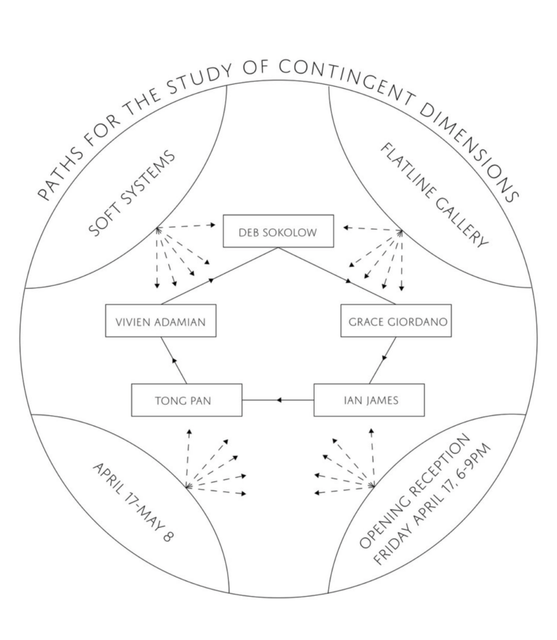

Paths for the Study of Contingent Dimensions
Soft Systems in collaboration with Flatline Gallery present “Paths for the Study of Contingent Dimensions,” a group exhibition of five artists exploring the diagram as narrative. Here, the diagram operates as a vector for world-building, constructing a new type of reality according to the patterns and structures through which the artist thinks, plotting rationality in spatial terms.
Featuring work by Vivien Adamian, J. Grace Giordano, Ian James, Tong Pan, and Deb Sokolow.
The exhibition will be on view April 17 through May 8, 2026, at Flatline Gallery in Bucktown, Chicago. Please join us for an opening reception on Friday, April 17 from 6 to 9pm. Following the reception, the gallery will be open for regular viewing hours Thursday through Sunday, 11am to 6pm, or by appointment